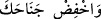

debdebesine: ‘Keşke benim de böyle şeylerim olsa!’ diye iç geçirerek ve imrenerek
“göz dikme.” Göz dikmek, baktığı şeyi çok beğendiği için, neredeyse hiç çekmeden
devamlı sûrette bakmak anlamındadır. İfâde, baktığı şeye imrenen birinin tamah edişi
gibi gözlerinle tamah etme, bakışını devamlı kılma, mânâsındadır.
Gözlerini dikme, çünkü sana verilmiş bulunan peygamberlik, Kur’ân, fazîletler ve
kemâlâta nazaran bütün bu mal ve yiyecek türleri, değer verilmeyecek önemsiz
şeylerdir. Çünkü sana verilenler, bizzât istenecek ve daimî lezzetlere iletecek şeylerdir.
Hâsılı, sana en büyük nîmet verilmiş bulunmaktadır.
Senin kâdir ve hürmet deryânın önünde
Dokuz feleğin içerdiği âlemler bir kabarcık değildir
Sâhib olduğun saltanata nazaran
Dünyâ ve âhiret mülkü hesapta yoktur
Dolayısıyla, sen de sana verilen bu nîmetlerle onlardan müstağnî ol, dünyâ metâına
iltifât etme. “Kur’an’ı tegannî ile okumayan kimse bizden değildir.”[91] hadîsi de bu
kabildendir. Hâfız bu hadisle ilgili dört açıklama zikreder:
1- Teğannîden maksad, sesi yükseltmektir.
2- Kur’ân’ın üstünlüğünden dolayı, Kur’an dışındaki bütün kitaplardan müstağnî
olmaktır. Nitekim Ebû Bekir (r.a.) şöyle demiştir: “Kime Kur’an verilir de o, kendisine
dünyâdan bir şeyler verilen bir kimseye kendisine verilenden daha üstün bir şey
verildiğini düşünürse, büyük olanı küçültmüş, küçük olanı da büyütmüş olur.”
3- Kur’ân’ı mânâyı bozmamak şartıyla nağmeyle okumak demektir. Rasûlullah (s.a.),
Arapları şiir okurken yapmaya alışık oldukları tegannîleri Kur’an okurken de yapmakta
serbest bırakmıştır.
4- Kur’an okurken, nağme yapmaksızın sâdece sesi güzelleştirme ve ona hoş bir edâ
vermektir.
“Onlardan dolayı” yâni, zayıf müslümanların kendileriyle güç kuvvet kazanacakları
düşüncesiyle îmân etmeyip tâbîlerinin arasına katılmayan kâfirlere “üzülme.” Çünkü
haklarında vermiş olduğum hüküm, onların kâfir olacaklarıdır. Kâşifî der ki: “Yâni,
dostlarının fakir ve muhtaç olduğuna üzülme.”
“Ve mü’minlere alçak gönüllü ol.” Berâberindeki fakir mü’minlere karşı alçak
gönüllü ve yumuşak davran. Zenginler neden îmân etmiyor, diye gönlünü sıkma, rûhun
daralmasın.
“
Vahfid cenâhaka (alçak gönüllü ol/kanadını indir)” tâbîri, kuşun yere
inmek istediğinde kanadını indirmesinden istiâre olarak kullanılmıştır. Allah Teâlâ: “O
(kıyâmet) alçaltıcı, yükselticidir.” (el-Vâkıa, 56/3) buyurur. Yâni o, birtakım insanları
cennete yükseltir, birtakım insanları da cehenneme alçaltır. Keşfü’l-esrâr’da şöyle
denilmiştir: “Hafd-ı cenâh (kanat indirmek) tâbiri, güzel huy ve ahlâktan kinâyedir.
“Sen yüce bir ahlâk üzeresin.” (el-Kalem, 68/4) hil‘atinin o yüce Hz. Risâlet’ten